wander wildwood
I make small things, mostly for a little E Ink phone, and tinker with a few home servers that several of them talk to. They keep to themselves — no accounts, nothing sent to me, nothing that needs looking after. Most of the work is deciding what to leave out.
Apps for the Mudita Kompakt
The Kompakt is a phone with a small E Ink screen, no colour, and a slow redraw. These are built for that screen: black on white, no animation, lists you can read in sunlight.
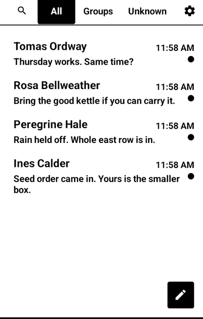
Messaging
SMS, MMS and Signal in one inbox, and a page your phone serves to your own computer so you can text from a keyboard.
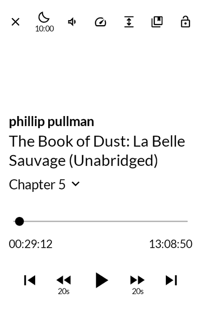
Audio Reading
An audiobook player. Point it at a folder of books, tell it once how they are laid out, and it keeps your place in each one.
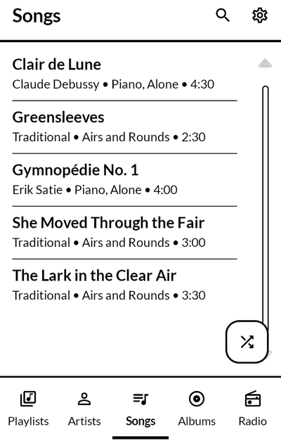
Music Box
A music player for a folder of your own music, a music server you run, internet radio and YouTube Music. A song you download stays on the phone.
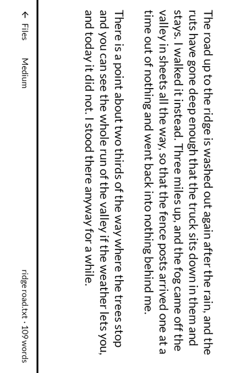
Typewriter
A text editor that opens in landscape and stays there, for writing with a keyboard plugged into the phone. What you write is plain text, in a folder you choose.
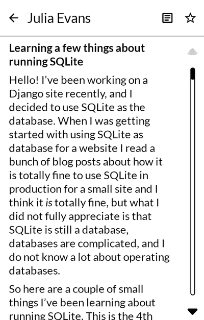
Clippings
Feeds read as plain text, with Gemini, gopher and Spartan alongside them; fetched on wifi, read with the radio off. The volume keys turn the page.
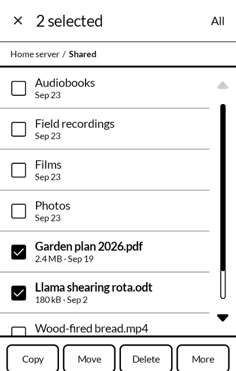
Files
A file manager, with the shared drives on your own servers as places like any other. Choose several things at once; a copy is written whole or not at all.
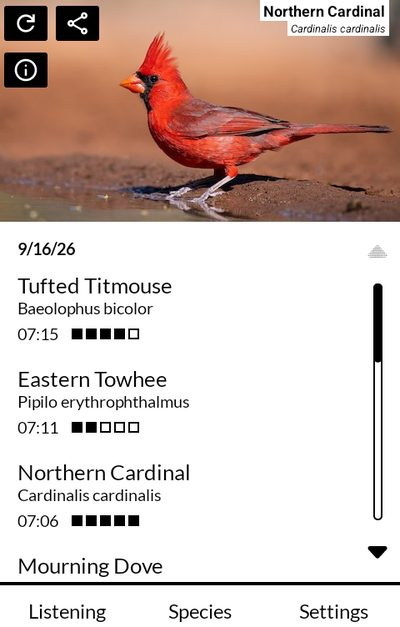
Birding
Names the birds it hears, offline, with BirdNET running on the phone itself. A bird's Wikipedia page is a press away, opened in your browser.
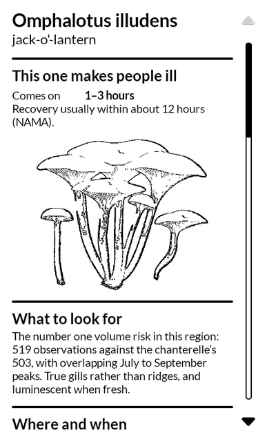
Mushroom Journal
Write a mushroom down while you are standing over it, and work out at home what it might be. It narrows a list, never decides, and says nothing about eating one.
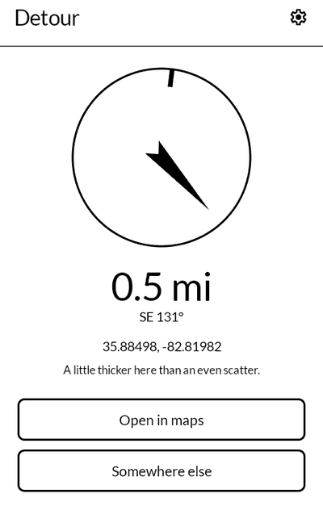
Detour
Press once and it picks somewhere near you to walk to, with no particular reason to go there, and gives you an arrow and a distance to follow.
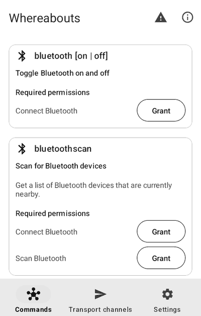
Whereabouts
Finds your phone when it is lost: where it is, a ring, a lock. With its server, the people who share with you appear on one map.
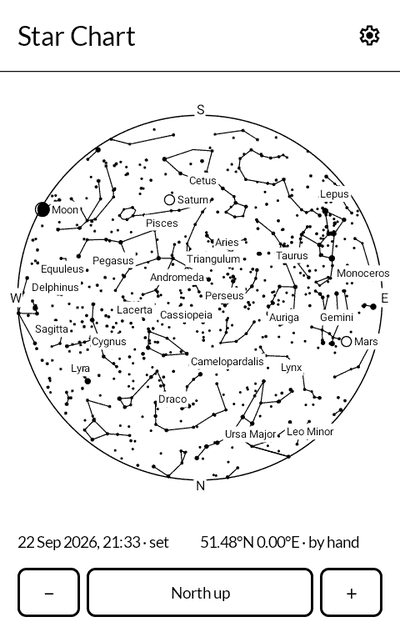
Star Chart
The sky over you, drawn the way a paper star atlas draws it, black on white. Set any moment and any place to see what will be up.
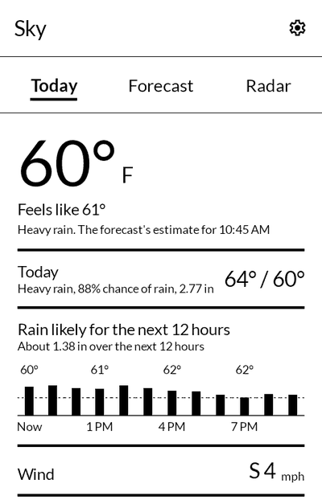
Sky
The days ahead, the rain radar, and your own weather station if you have one. It says no more than the station and the forecast know.
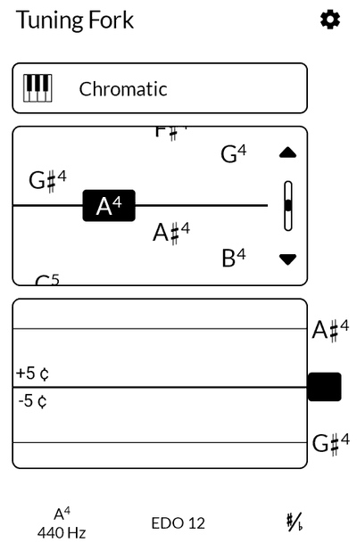
Tuning Fork
A tuner, chromatic or by instrument, with a pitch plot, a cents readout and temperaments well past equal. The screen stays awake while you play.
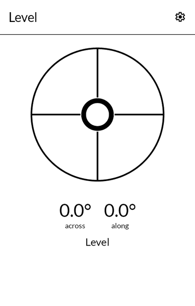
Level
A spirit level that knows whether it is lying flat or standing on an edge, and shows the right vial for each. It says level only when it is.
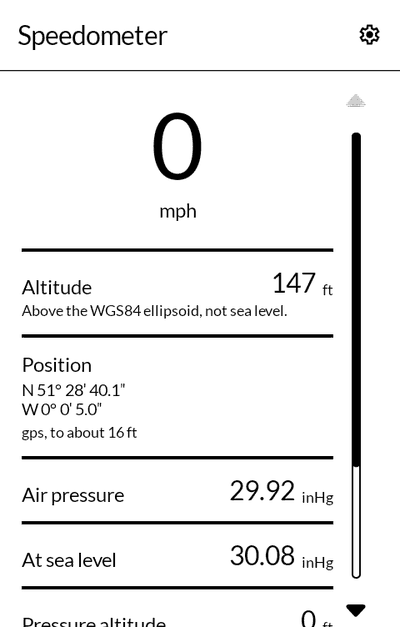
Speedometer
How fast you are going, how high you are, and what the air is doing. Press the speed and it fills the screen. Not accurate enough to navigate by.
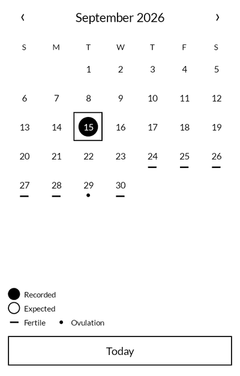
Cycle
A cycle tracker with no permissions at all. It shows what you recorded, expects what comes next, and keeps everything you write on the phone.
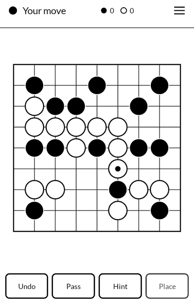
Go
A game of Go on a 9×9 board, against GNU Go or the person opposite, with handicaps, a hint when you want one, and the board counted at the end.
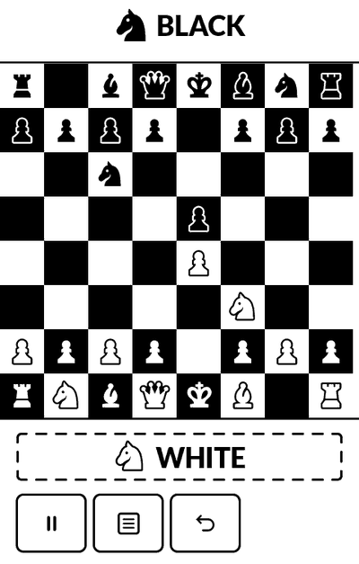
Chess+
The phone's own chess app, with a second player added: two people on one board, passing the phone back and forth between moves.
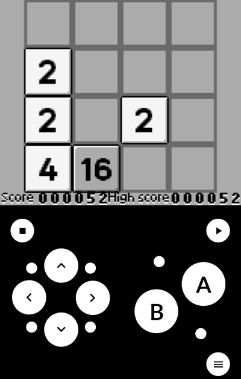
Handheld Games
Game Boy games, drawn in four greys for a screen that has no colour. The picture lands at exactly three times size, so nothing is resampled.
Installing
Each download is an .apk, the file an Android phone installs from. Open it on
the Kompakt and allow the installation when it asks. The first time, Android will want
permission to install from wherever you downloaded it.
Every release publishes a .sha256 beside the APK, so you can check the file you
got is the file that was built.
To be told when there is a new version, add any of the source links above to Obtainium, which watches a repository and offers you its releases.